Furniture plan
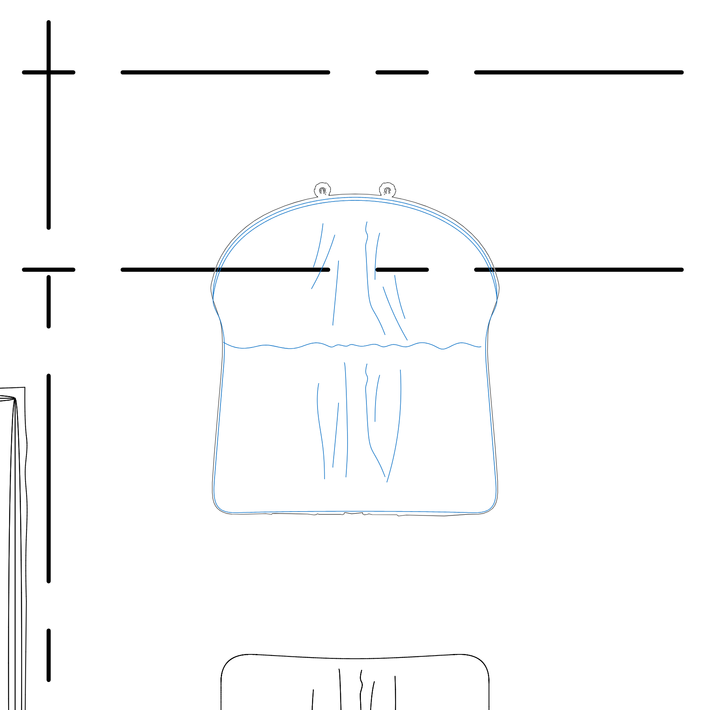
Blue line = Baxter native DWG bergere cluster with negative-Z OCS arcs restored. Two Front fit-only curves remain approximate pending AutoCAD verification. Grey = actual IFC Body. Black = simplified proxy. The project-only raised headrest cushion remains grey/black.
Marilyn bergere armchair with swivel base - 86 x 100 x 94 cm · source SHA-256 cb9825eecab7c78ee28e7668e933c2fe413395a63bf75f3afab8cc4959864724 · unique exact cluster: True
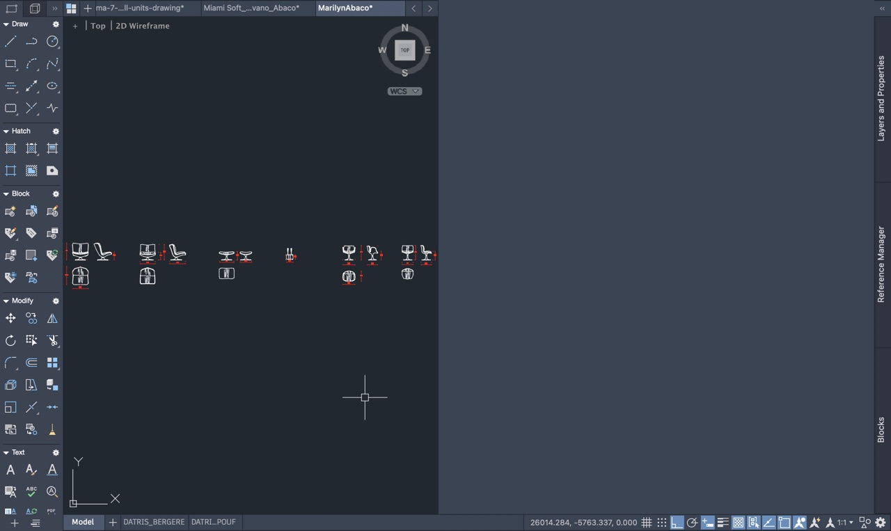
Blue = _ARREDO · red = native layer 0 seam/fold detail · purple = native Make2D visible upholstery surface.
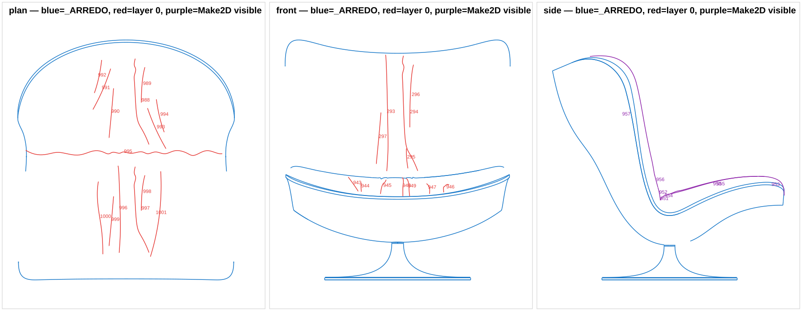

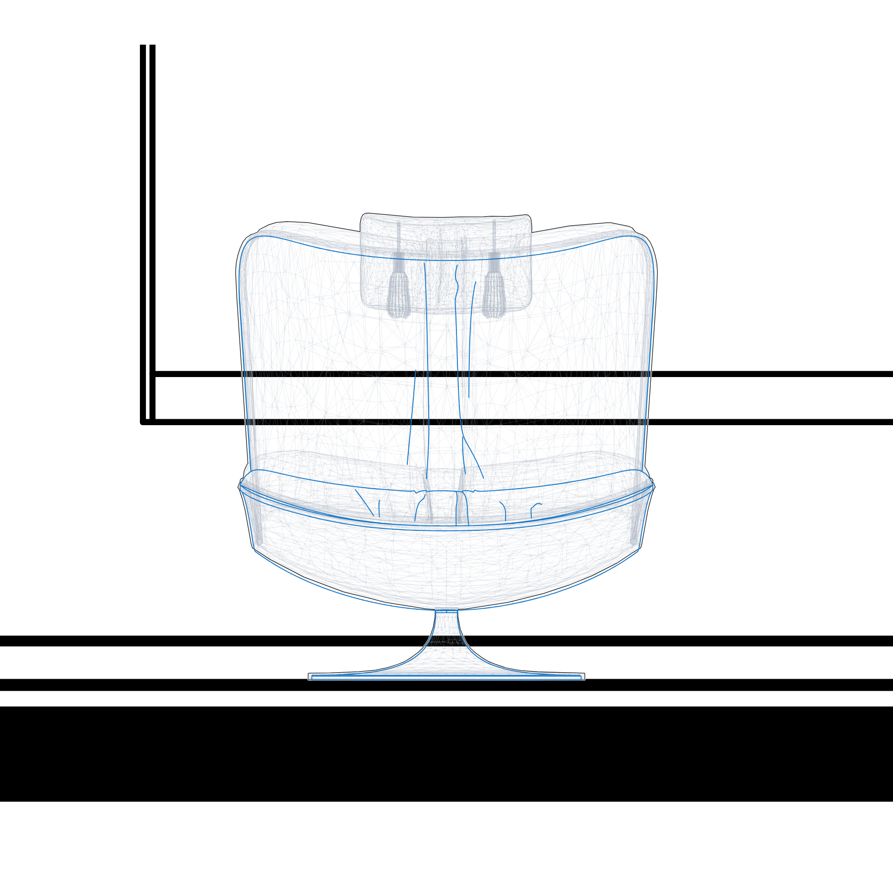
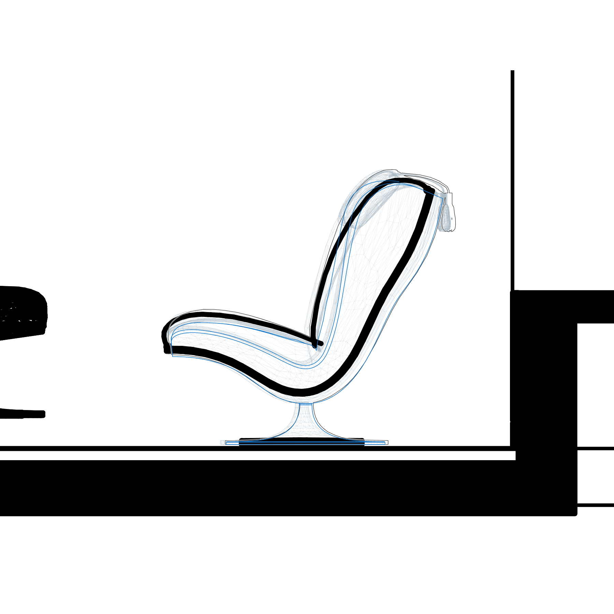
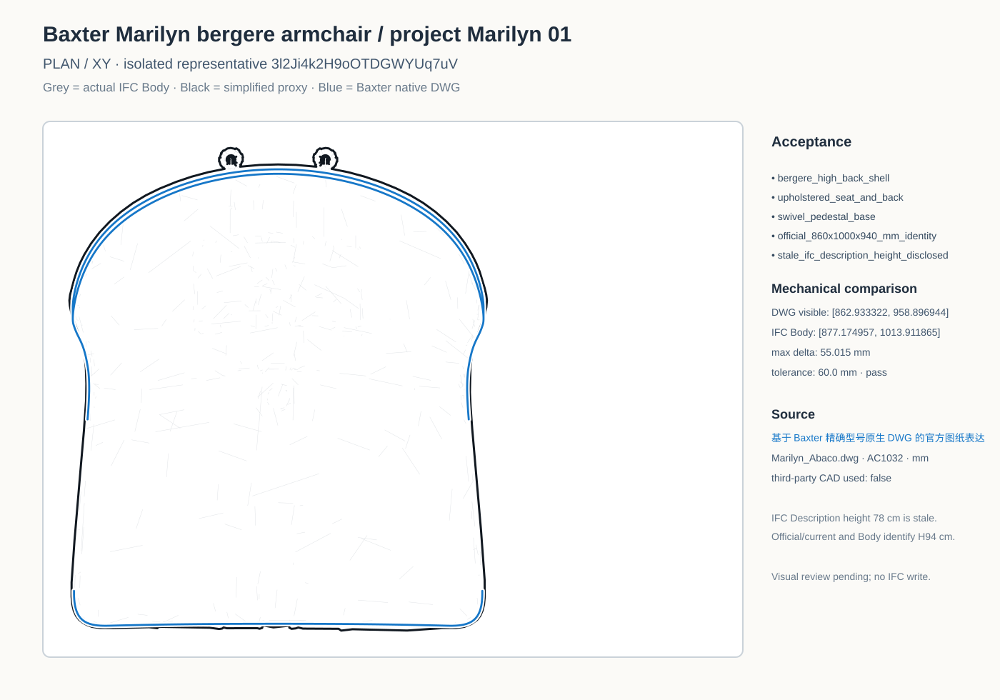
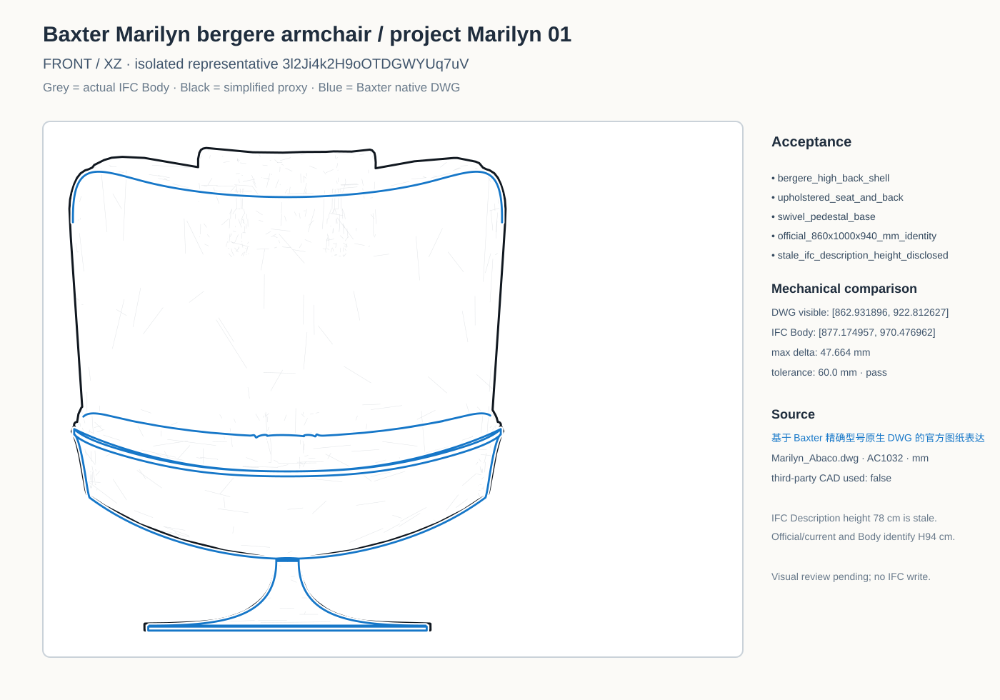
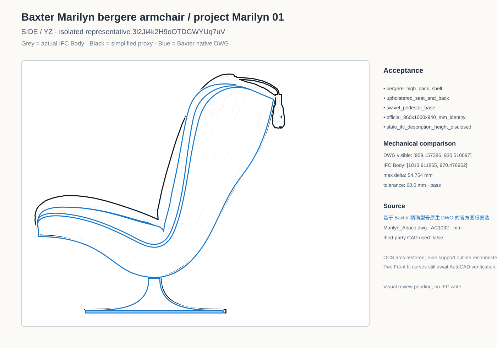
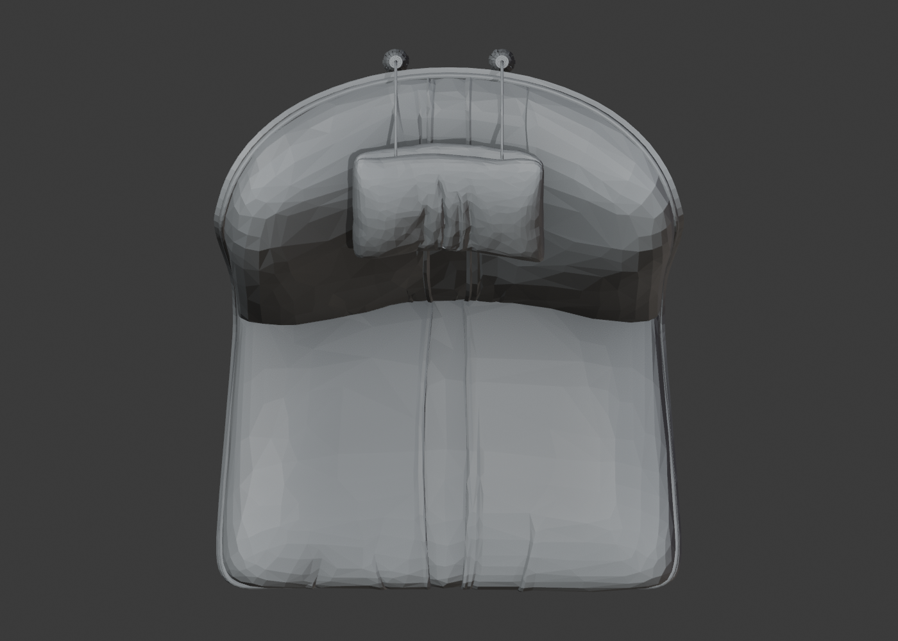
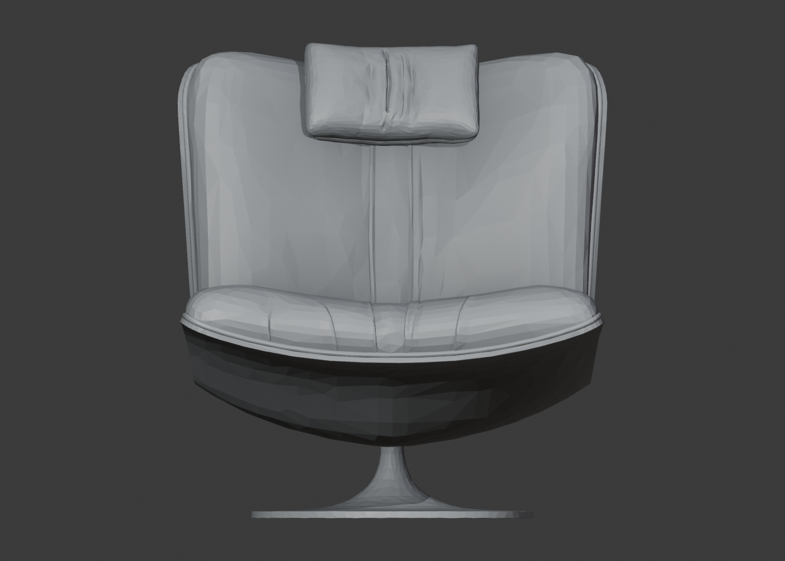
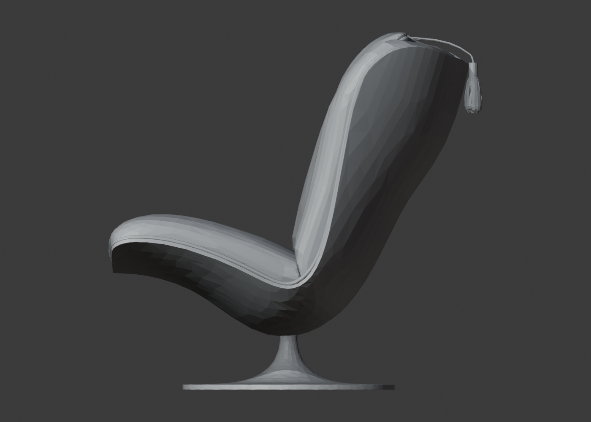
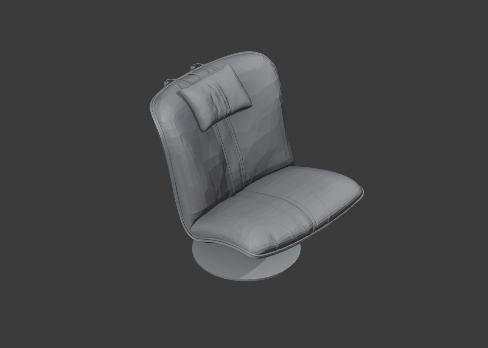
7a50b87e8f48a7c2bfbaa9f1dabdfca7155fa684b2325c66aa1ae15c8ab0a25c